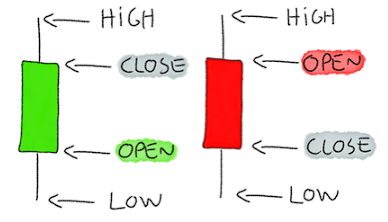
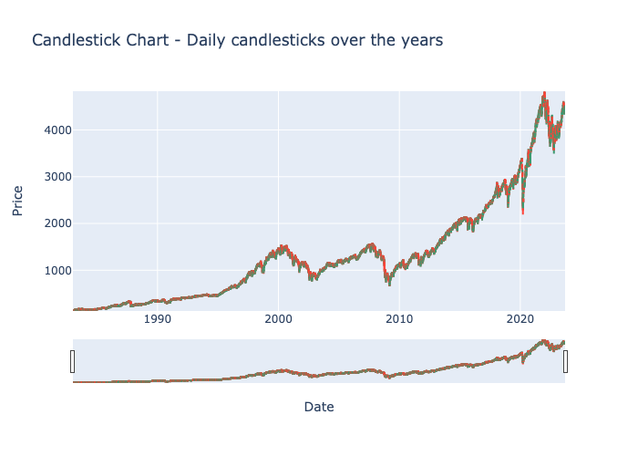
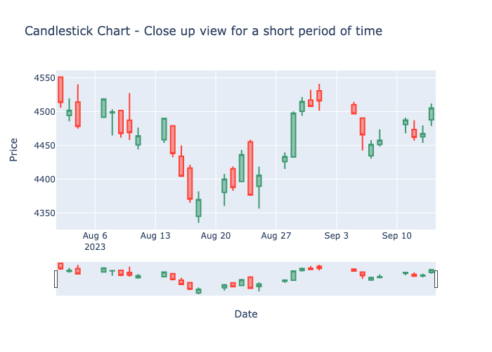
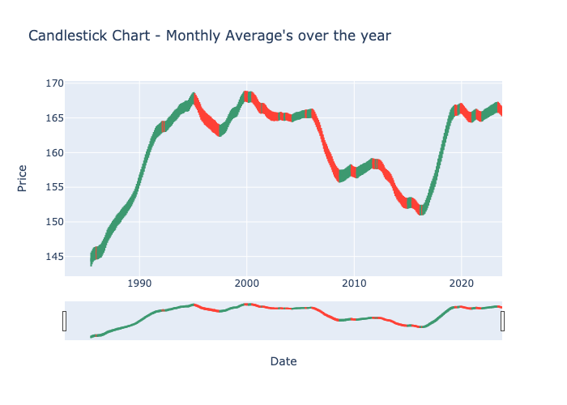

The below chart represents candles over 40 years, the red and green color candles have a specific significance wrt the stock market. Below is some general information about the candlesticks (known as Japanese candlesticks) significance for everyone’s understanding.
Japanese candlesticks are a tool to visually represent more data in a price chart by allowing traders to gain knowledge of the open, close, highest and lowest prices of an asset during any given session.
A candlestick is composed of a body, a lower wick and an upper wick, let's discuss each part individually:
Below chart represents daily candlesticks over 40 years
Below is the close up view over a shorted period of time, in order to represent the candles more clearly and deduce some findings:
The candles are between the time period August to September 2023.
The first red candle means that the stock market's closing rate (4513) was lower than that day's opening rate (4550). By observing the wick of the candle, the upper wick is missing which means the opening price and the day’s highest price are the same. The lower wick of the candle is present, which presents the day's lowest price (4505). It makes sense that the candle is red because the closing price is lower than the opening price.
The next green candle can be analyzed in a similar way, but the entire candle is green because the market closed (4501) at a higher rate as compared to the opening rate (4494). The analysis from this is that, people bought more stocks as compared to selling their existing stocks.
The takeaway from this is that trader’s can make decisions about buying or selling their stocks based on the market movement of the candle’s. There are certain patterns that one can look for in order to analyze if the stock market is going to rise or fall. These patterns require domain knowledge about pattern analysis. But these sticks can be used to understand if stock is going to fall (mass selling) or rise (mass buying).
Below is the candlestick figure for monthly averages.
The chart is not meant to be very helpful for trader’s because daily data matters in the stock market, but we wanted to plot this chart and see how was the average performance of the market over the years since we have about 40 years worth of data and the chart with daily data of 40 years was not easy to draw analysis from. Mostly so many years worth of data would be good to analyze using a Machine Learning model or can be analyzed manually for patterns over 10-20 years of past data.
Overall the market over the 40 years has been quite good, with the market being down during 1995-1997, 2006-2008, 2012-2014.
Based on the Yen-Dollar currency exchange volatility chart and the candlestick chart, the period 2012-2014 seems to have some problems and can be seen with the fall in stock market and 2012 having the lowest exchange rate.
The null hypothesis, H0 is that there is no significant difference between means of the two features - CPI US and CPI JP and the alternative hypothesis, H1 is that there is significant different between the means of the two features. The t-statistic, corresponding p-value and degrees of freedom is statistic = 100.14, pvalue = 0.0, df = 21774.0. We are using 0.05 as the significance threshold. Since, the pvalue is less than 0.05, we can reject the null hypothesis and accept the alternative hypothesis. therefore, we can conclude that there is a significant difference in the CPI values of USA and Japan in our dataset.